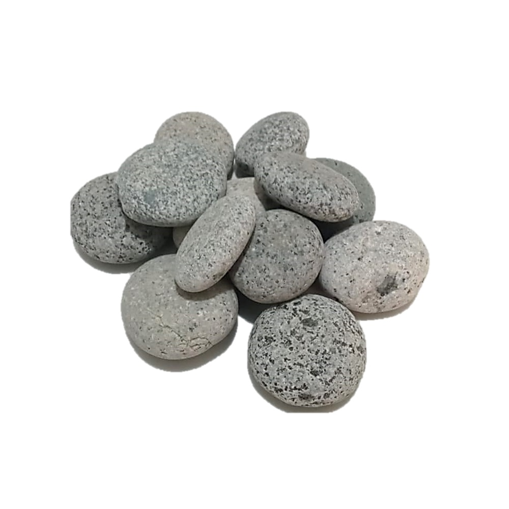
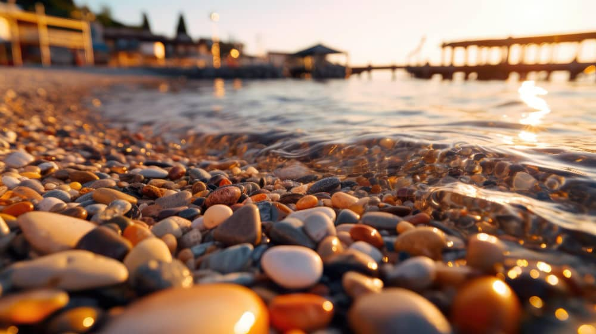

Calibre
CalibrePiedra 1/2"
Formato compacto para detalles decorativos, macetas, senderos y acabados.
Ver producto →Seleccionamos canto rodado para jardines, paisajismo, decoración, construcción y pedidos por volumen.
Explora nuestras variedades. En cada producto puedes revisar sus opciones y realizar tu consulta.
CalibreFormato compacto para detalles decorativos, macetas, senderos y acabados.
Ver producto → Calibre
CalibreUna opción versátil para jardines, exteriores y proyectos de paisajismo.
Ver producto → Calibre
CalibreMayor presencia visual para zonas rústicas, exteriores y espacios amplios.
Ver producto → Natural
NaturalCombinación de tonos naturales para diseños orgánicos y ambientes variados.
Ver producto → Color
ColorTonos cálidos y suaves para jardines, fachadas y composiciones decorativas.
Ver producto → Color
ColorColor intenso para crear contrastes y puntos de atención en exteriores.
Ver producto → Color
ColorAcabado luminoso para espacios modernos, jardines y decoración.
Ver producto →
EspecialPatrones y tonalidades naturales que aportan una apariencia distintiva.
Ver producto → Pulida
PulidaSuperficie suave y estética para decoración, acabados y usos especiales.
Ver producto →Selecciona producto, calibre, presentación y cantidad. El precio mostrado es referencial para bolsas; transporte y pedidos grandes se cotizan aparte.
Atendemos consultas para proyectos que requieren cantidades mayores a las presentaciones regulares. Cuéntanos el tipo de piedra, cantidad aproximada y lugar de entrega para preparar una cotización.
El precio mayorista se cotiza según producto, cantidad, disponibilidad, destino y modalidad de despacho.

Eco Roca nace en Camaná con el objetivo de ofrecer piedra canto rodado seleccionada para proyectos residenciales, comerciales y de paisajismo.
Buscamos brindar una atención directa, información clara de cada producto y soluciones según la cantidad que necesita cada cliente.
Indícanos producto, cantidad aproximada y ubicación. Te responderemos con información para tu pedido o cotización.